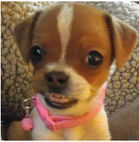

Expedientes de mascotas
Datos de la mascota, alergias, atención especial y observaciones. Cada ficha está conectada con los datos de su propietario.
PROYECTO FULL STACK · JAVA
Sistema web para organizar pacientes, propietarios y citas de una estética canina. Nació como una aplicación de escritorio y evolucionó para usarse desde cualquier navegador.

01 / EL PROYECTO
EsteticaCanina digitaliza el flujo de una estética canina: mantiene el registro de cada mascota y su propietario, facilita el seguimiento de citas y organiza el acceso del equipo según sus responsabilidades.
Se conservaron las entidades del dominio que podían reutilizarse. Las ventanas se reemplazaron por páginas web para registrar, consultar y gestionar la información desde el navegador.
02 / QUÉ RESUELVE
Las tareas de cada día, reunidas en una sola herramienta.
Datos de la mascota, alergias, atención especial y observaciones. Cada ficha está conectada con los datos de su propietario.
Organiza fecha, hora, servicio, estado y notas de cada cita vinculada a una mascota.
ADMIN, OPERADOR y CONSULTA cuentan con permisos distintos para cuidar los datos y las acciones disponibles.
El personal usa páginas web renderizadas con Thymeleaf y los datos también se exponen mediante endpoints REST para mascotas y citas.
ACCESO CON RESPONSABILIDAD
03 / TECNOLOGÍAS
Una arquitectura en capas que separa la interfaz, las reglas de negocio y el acceso a datos.
Arquitectura por capas
Controladores web y REST · Servicios de negocio · Repositorios JPA · MySQL
¿QUIERES VER CÓMO ESTÁ HECHO?
Explora la implementación, consulta la configuración y conoce los siguientes pasos del proyecto.